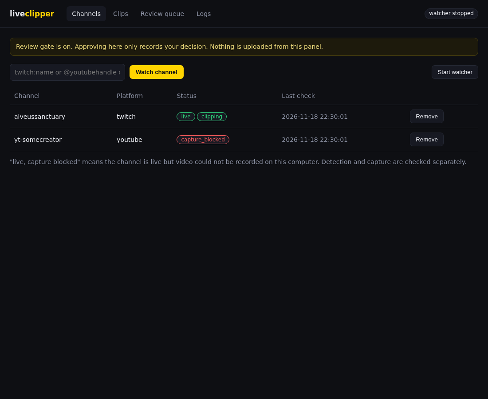
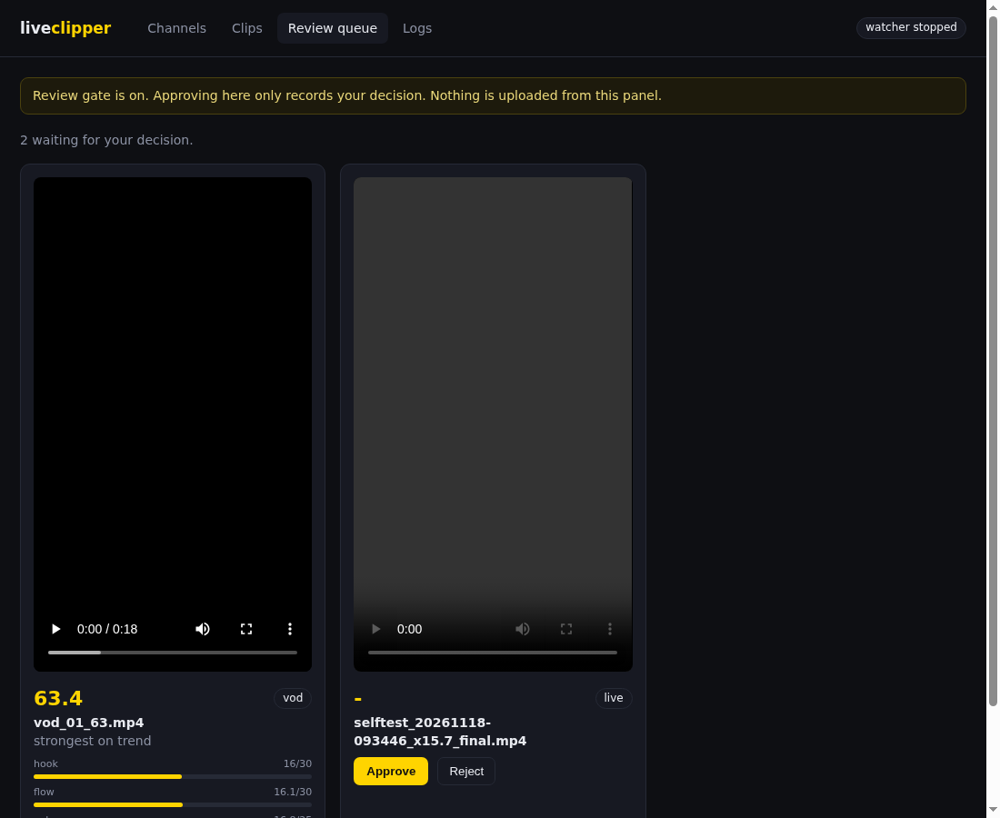
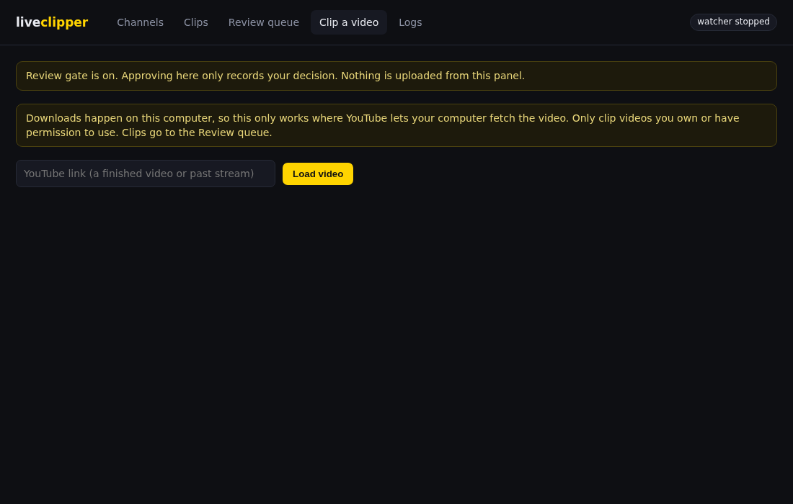

Open-source tool that watches Twitch and YouTube streams, cuts the best moments into vertical 9:16 clips, and puts them in a review queue. You approve each clip yourself.
Download v7 (ZIP, 65 KB)Source on GitHubhttp://127.0.0.1:8765 on that same computer. Nothing on this page can capture a stream, and there is no hosted version or account.Add a channel once. The watcher checks every minute, starts clipping when it goes live and stops when it ends.
Cuts a clip when chat spikes or the stream gets loud. Rendered as 9:16 with captions, hook text, watermark and thumbnail.
Point it at a Twitch VOD or a local video. It ranks moments 0-100 (hook, flow, value, trend) from the transcript, loudness and scene cuts. No AI model, plain arithmetic.
Gameplay on top, webcam below. Webcam detection is a simple heuristic, so check the first clip or give the webcam box with --cam.
Paste a YouTube link, preview it, set start and end sliders and cut a clip. The download happens on your computer and only works where YouTube lets your computer fetch the video.
Every clip waits for your approve or reject. You can upload approved clips to your own YouTube channel by hand, or turn on autopilot (off by default, private uploads unless you choose otherwise, everything logged). Facebook Reels, Instagram Reels and TikTok uploads are built too, with setup steps in PLATFORMS.md.



Needs Python 3.10+, ffmpeg. Steps shown for Mac; on Windows install the same tools with winget or their installers.
1. Download and unzip liveclipper-v7.zip, open a terminal in that folder
2. brew install ffmpeg streamlink
3. pip3 install -r requirements.txt
4. python3 liveclipper.py --selftest --thumbnails --out test_clips # offline test
5. python3 liveclipper.py --check @somechannel # checks that your computer can capture that source
6. python3 webui.py # then open http://127.0.0.1:8765 in your browserRun step 5 before relying on it for a big stream. YouTube sometimes refuses automated access; if it does, the tool says so and stops rather than pretending to record.
--check exists.Only clip and post content you own or have the creator's permission to use, and follow each platform's terms. Having a clip does not mean you may publish it.